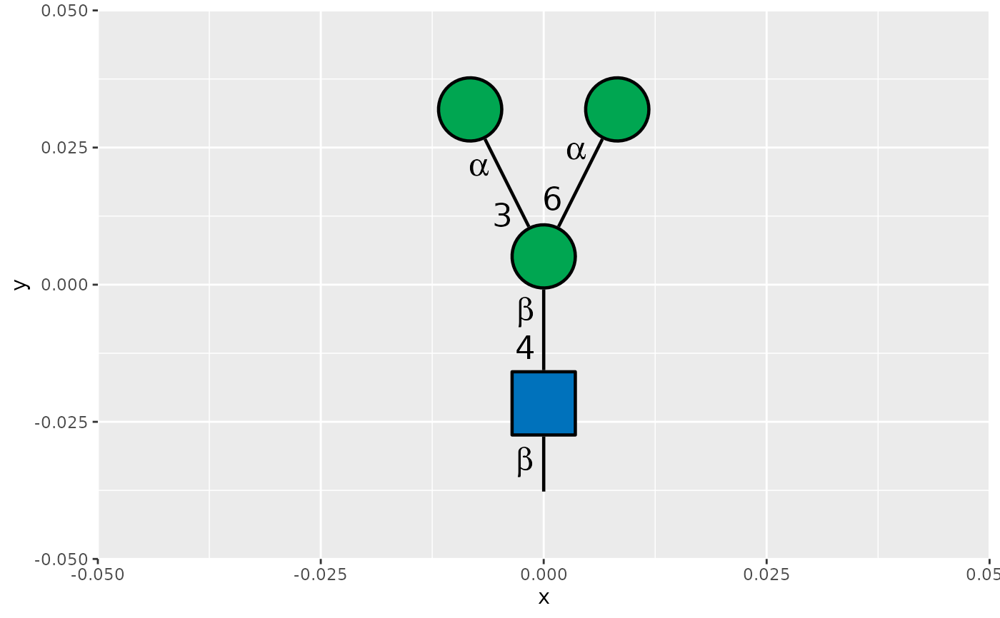
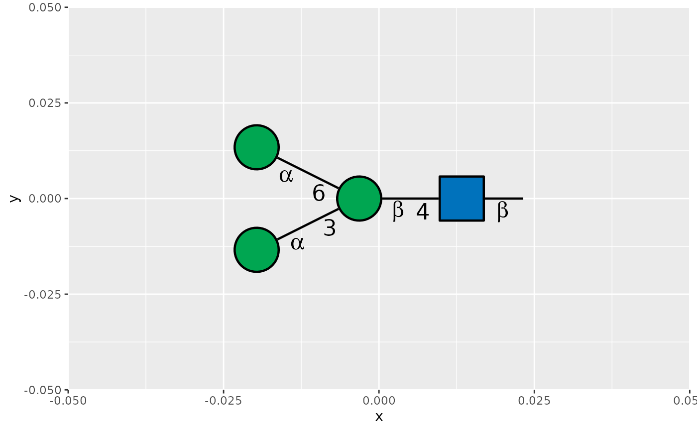

These helpers align the reducing end of every glycan cartoon with its anchor
in geom_glycan(), scale_x_glycan(), scale_y_glycan(), or
guide_glycan(). Use hjust_red_end() for horizontal alignment when
orient = "V", and use vjust_red_end() for vertical alignment when
orient = "H". Because the required justification is calculated separately
from each cartoon's rendered bounds, the helpers also work for collections
of glycans with different asymmetric branches. Glycan scales and guides use
reducing-end justification by default along the axis perpendicular to the
drawing orientation; geom_glycan() remains centered by default.
Examples
glycan <- data.frame(
x = 0,
y = 0,
structure = "Man(a1-3)[Man(a1-6)]Man(b1-4)GlcNAc(b1-"
)
ggplot2::ggplot(
glycan,
ggplot2::aes(x = .data$x, y = .data$y, structure = .data$structure)
) +
geom_glycan(orient = "V", hjust = hjust_red_end())

ggplot2::ggplot(
glycan,
ggplot2::aes(x = .data$x, y = .data$y, structure = .data$structure)
) +
geom_glycan(orient = "H", vjust = vjust_red_end())
